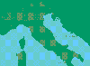
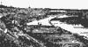
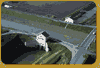
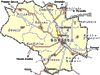
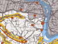
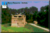
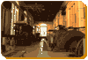
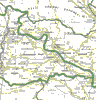
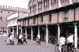
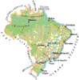

Página histórica preservada em captura arquivística.
 [página não recuperada no acervo] |
Comuni d'Italia
in cui sono vissuti o vivono gli Zaniratti
menzionati. |
| [imagem histórica não recuperada: ../MiniLuogProvFE.gif] [página não recuperada no acervo] |
Comuni della provincia
di Ferrara. |
 [página não recuperada no acervo] |
Le Bonifiche
Ferraresi [página não recuperada no acervo]. |
| [imagem histórica não recuperada: ../Minici_sto_a.gif] [página não recuperada no acervo] |
 [página não recuperada no acervo] |
La Bonifica
di Burana [página não recuperada no acervo] e la Botte Napoleonica. |
 [página não recuperada no acervo] |
Frazioni del comune di Bondeno. |
 [página não recuperada no acervo] |
Cartina dettagliata zona di confine Bondeno / Felonica
/ Po
(400 KB ! ) |
 [página não recuperada no acervo] [página não recuperada no acervo] |
Una bella descrizione di Stellata [página não recuperada no acervo]
fatta da Anna. |
 [página não recuperada no acervo] |
|
Stellata (frazione di Bondeno in provincia di Ferrara).
- Rocca Possente (sec. XVI) |
| [imagem histórica não recuperada: ../MiniStellataImpiantoPilastr.gif] [página não recuperada no acervo] |
 [página não recuperada no acervo] |
Stellata - Impianto Pilastresi |
 [página não recuperada no acervo] |
Parte della provincia di Mantova, in
cui compaiono il comune di Felonica e la sua
frazione Quatrelle, al confine con la provincia
di Ferrara. |
| [imagem histórica não recuperada: ../MiniQuatrelleMN1.gif] [página não recuperada no acervo] |
[imagem histórica não recuperada: ../MiniQuatrelleMN2.gif] [página não recuperada no acervo] |
Quatrelle (frazione
di Felonica, provincia di Mantova)
- La piazza, dove si intravvede la casa Zaniratti .
- L'argine. |
|
Una bella descrizione di Quatrelle
fatta da Anna. |
| [imagem histórica não recuperada: ../MiniFerraraFEduomo.gif] [página não recuperada no acervo] |
 [página não recuperada no acervo] |
Ferrara.
- Il Duomo
- Piazza delle Erbe |
 [página não recuperada no acervo] |
Mappa del Brasile,
in cui compare Belo Horizonte. |
| [imagem histórica não recuperada: ../Brazil/igreja_small.jpg] [página não recuperada no acervo] |
Espera Feliz,
il paese dove Custode Sante si stabilì, forse subito dopo essere
arrivato in Brasile. |